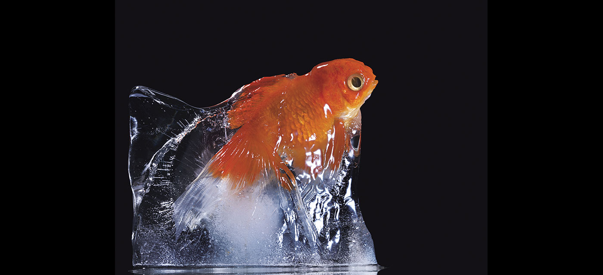
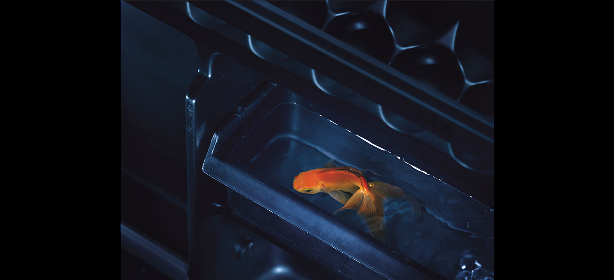
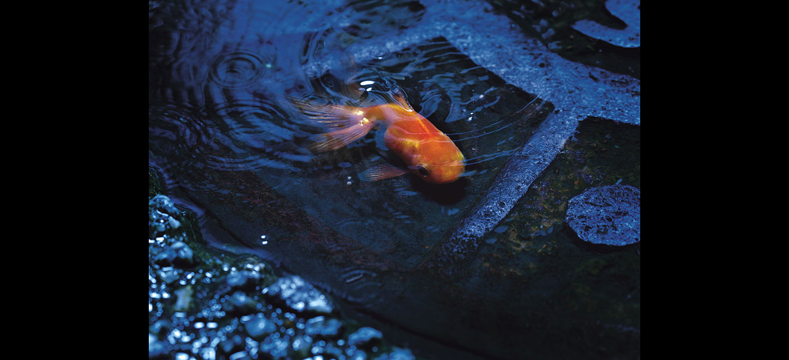
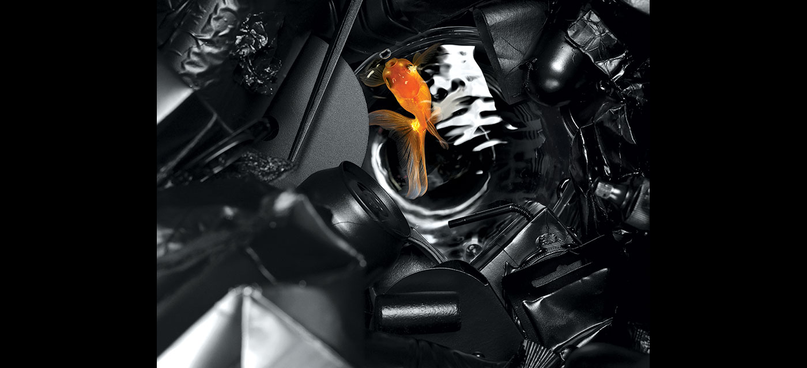

Peixes




Peixes sobreviventes
Em um futuro não muito distante, cientistas afirmam que o mundo, da maneira que nós
conhecemos, irá acabar. Previsões dão conta de que a destruição do ecossistema pelo
homem chegará a um limite em que não será mais possível voltar atrás.
Com o degelo das calotas polares e as reviravoltas climáticas, teremos uma inundação
global à qual nada — ou quase nada — poderá resistir. Mas a esperança humana é de
que a natureza irá se regenerar, e tudo será reestabelecido.
No projeto "Peixes", convido o público à próxima pergunta: passado o tempo necessário
para a natureza se recompor, em um cenário em que só os mais fortes sobreviveram,
conseguirão eles enfrentar o isolamento?